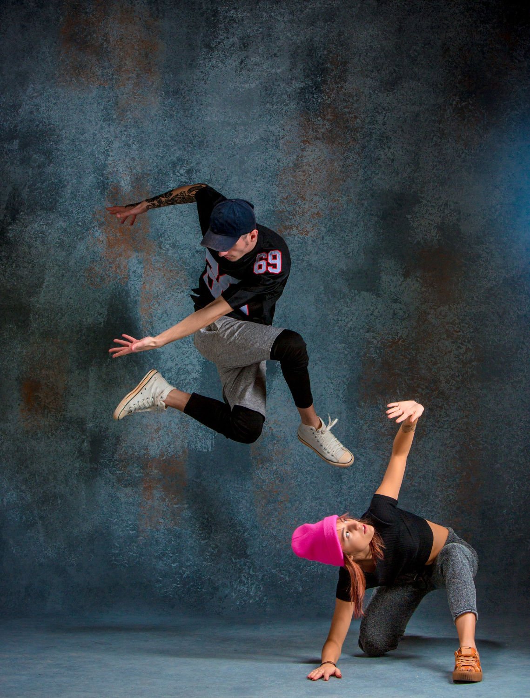

A dança hip hop refere-se aos estilos de dança sociais ou coreografados relacionados à música e à cultura hip hop. Isto incluiu uma grande variedade de estilos, especialmente breakdance e popping, os quais foram desenvolvidos na década de 70 por afros e latino-americanos. Para alguns, a dança hip hop pode ser apenas uma forma de entreterimento ou um passatempo. Para outros, tornou-se um estilo: um caminho para ser ativo na aptidão física ou na dança competitiva; e uma maneira de ganhar a vida dançando proficionalmente.A sua popularidade cresceu, principalmente na primeira metade da década de 2000, permanecendo até hoje como uma das culturas altamente influentes na sociedade, chegando mesmo a criar um estilo próprio de dança e de roupa, pelo que o hip-hop alcançou o estatuto de ser uma filosofia de vida para muitas pessoas.
O movimento Hip Hop pode ser dividido em cinco elementos:
A relação entre o grafite e o hip hop surgiu quando novas formas de pintura foram sendo realizadas em áreas onde a prática do rap, do dj e da dança. Entre as diferentes manifestações artísticas do movimento hip hop, a música se insere como papel principal, com DJs, MCs e do Rap.
Quando o hip hop surgiu, concentrava-se nos disc jockeys que criavam batidas rítmicas, eram pequenos trechos de música com ênfase em repetições, posteriormente, foi acompanhada pelo rap, identificado como um estilo musical de ritmo e poesia, junto com as danças improvisadas, como a breakdance, o popping e o locking.
A dança hip hop refere-se aos estilos de dança sociais ou coreografados relacionados à música e à cultura hip hop. Isto incluiu uma grande variedade de estilos, especialmente breakdance e popping, os quais foram desenvolvidos na década de 70 por afros e latino-americanos. Para alguns, a dança hip hop pode ser apenas uma forma de entreterimento ou um passatempo. Para outros, tornou-se um estilo: um caminho para ser ativo na aptidão física ou na dança competitiva; e uma maneira de ganhar a vida dançando proficionalmente.

A dança de rua executada pelos adeptos do movimento Hip-Hop apresenta uma grande mistura de estilos próprios, caracterizados por movimentos rápidos e precisos dos braços e das pernas. Podem envolver piruetas e até mesmo movimentos nos quais os dançarinos ficam de cabeça para baixo. Outra característica da dança Hip-Hop são os movimentos improvisados, o que a torna as apresentações sempre divertidas e originais.Uma característica muito curiosa desse tipo de dança de rua é que, nas apresentações, acontecem duelos entre dois dançarinos: o primeiro executa seus movimentos e, em seguida, o segundo deve realizar movimentos ainda mais complexos e criativos,os arrancando aplausos e gritos de euforia dos espectadores.
O breaking ou a breakdance foi criado no Bronx, em Nova Iorque, durante a década de 1970. Enquanto os afro-americanos são considerados os criadores do estilo de dança, os latinos são reconhecidos por manter viva a tradição, no final dos anos 1970.O breaking inclui quatro movimentos fundamentais: toprock, os passos realizados em pé; downrock, realizado no chão para apoiar o seu peso; freezes, onde se faz poses elegantes com as mãos; e power moves, os mais difíceis, com impressionantes movimentos acrobáticos. Um movimento extra que é frequentemente utilizado em batalhas de b-boys e principalmente entre crews é a apache line. Em 1981, o Lincoln Center, na cidade de Nova Iorque, sediou uma batalha de breaking entre Rock Steady Crew e The Dynamic Rockers. Este evento teve a cobertura realizada por New York Times, Village Voice, Daily News, National Geographic e a imprensa local, um fato que ajudou os b-boys a receberem uma atenção maior pelo mundo.
O locking, originalmente chamado de campbellocking foi criado em Los Angeles por Don Campbell e introduzido no país por seu grupo, o The Lockers. O locking moderno possui movimentos similares ao popping, e é muitas vezes confundido com este.O lock é o movimento inicial usado na dança, o qual é similar ao freeze da breakdance ou uma pausa repentina. Um dançarino de locking é caracterizado pelas constantes paradas de ação e rápido reinício do movimento. É indevidamente chamado por pop-locking em algumas regiões dos Estados Unidos. Popping e locking são dois estilos de dança diferentes com suas próprias histórias, seus próprios conjuntos de movimentos, e suas próprias categorias de competição. Um dançarino pode realizar um ou outro, mas não ambos ao mesmo tempo. Foi só depois de assistir o The Lockers na televisão que o jovem Boogaloo Sam se inspirou para criar o popping e boogaloo elétrico. O The Lockers era composto por um número pequeno de lockers e robôs dançarinos, tendo sido treinado por Toni Basil. Por seu papel importante, Basil foi condecorada no Campeonato Mundial de Dança Hip Hop de 2009 como a única contribuinte feminina do Living Legend Award.
O popping foi criado por Sam Solomon, em Fresno (Califórnia) e realizado por sua equipe, a Electric Boogaloos. É baseado na técnica de rápida contração e relaxamento dos músculos para causar um empurrão no corpo do dançarino, referido como pop ou hit. Cada hit deve ser sincronizado com o tempo e as batidas da música. O popping também é usado como um termo para se referir a uma gama superior a 10 outros estilos de dança semelhantes. Este estilo inclui dois movimentos principais, deslizar e flutuar, que são movimentos feitos com a parte inferior do corpo, especificamente os pés e as pernas. Quando feito de modo correto, dá a impressão que o dançarino está deslizando sobre o gelo.
O hip hop enquanto cultura urbana surgiu na periferia de Nova York, esntre as comunidades caribenhas, afro-americanas e latino-americanos na década de 1970. O contexto social era de violência e criminalidade nesses bairros, e a única forma dw lazer possível para os jovens era nas ruas. Eles econtraram na música,poesia,dança e na pintura uma forma de manifestação de sua realidade e contestação.
O fundador do hip hop teria sido Clive Campbell, ou Dj Kool Herc. O primeiro evento da história do hip hop ocorreu no dia 11 de agosto de 1973, que ocorreu na festa de aniversário da irmã do Dj, Cindy Campbell.
12 de novembro de 1973 outra data que marcou história do hip hop, foi o dia da fundação da ONG Zulu Nation que promovia a cultura hip hop como forma de manter os jovens longe do crime e da violência.
Aos poucos a poesia na música, representada pelo rap, ganhou o espaço nas discotecas, que até então não cansavam de tocar os hits da era disco. As duplas de DJs e MCs ganhavam destaque e travavam competições entre si, as batalhas de rap, feitas só pela manifestação cultural e sem conotação de violência. O grafite nos muros era a expressão da pintura na cultura hip hop, e o break era a dança que saía das ruas para as festas em toda a cidade.